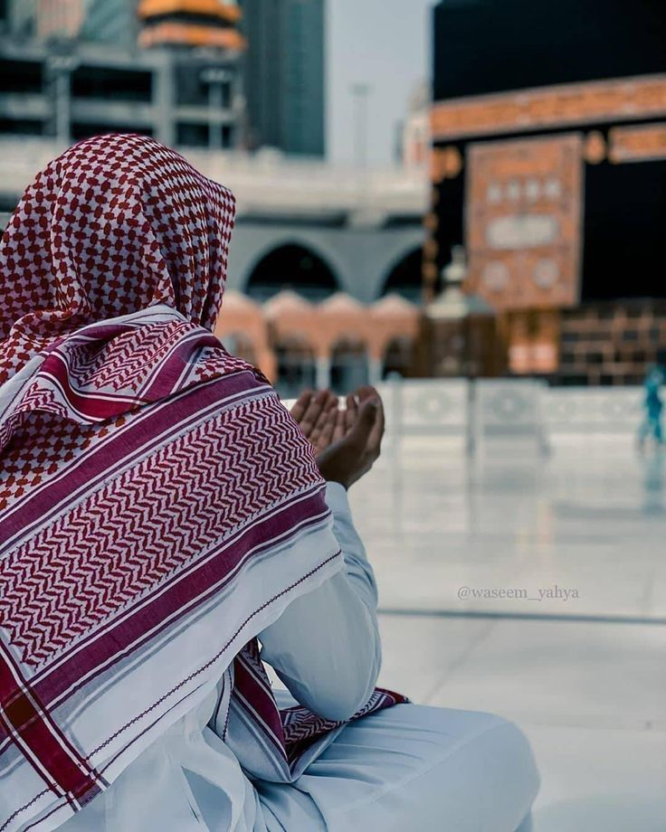

Discover Pakistan’s Rich Religious Heritage
Religion plays a central role in the life and culture of Pakistan. The majority of Pakistanis are Muslims, making Islam the state religion and the most widely practiced faith in the country. Within Islam, most Pakistanis follow Sunni Islam, while a smaller percentage adhere to Shia Islam. Islamic practices, beliefs, and festivals such as Eid-ul-Fitr, Eid-ul-Adha, and Ramadan are integral to daily life and national culture.

A Muslim is a person who follows Islam, a monotheistic faith that believes in one God (Allah) and follows the teachings of the Prophet Muhammad. Muslims consider the Quran to be the literal word of God, providing guidance on how to live morally, spiritually, and socially.